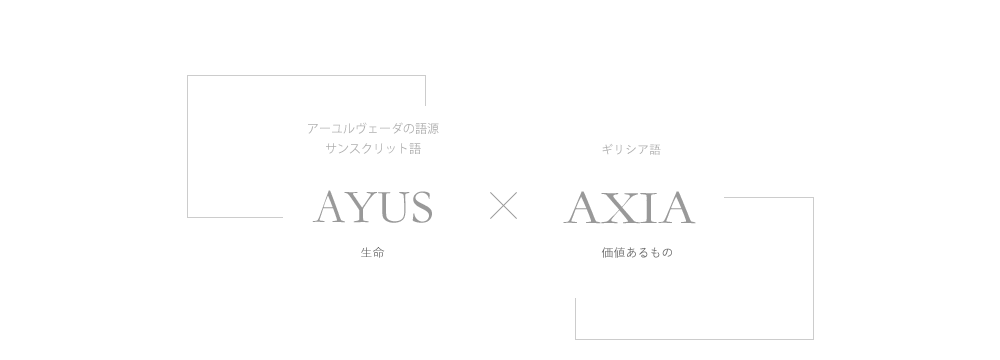
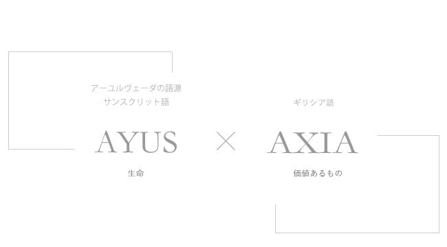
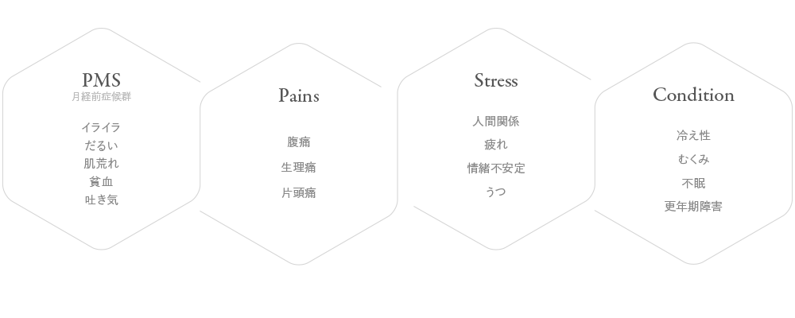
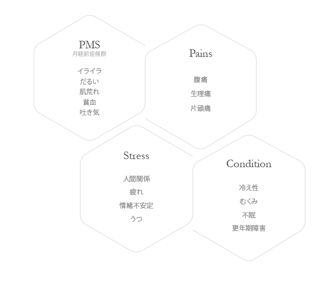
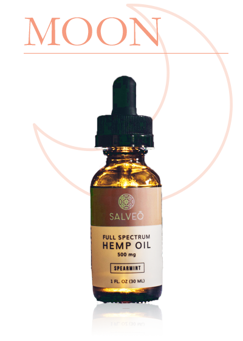
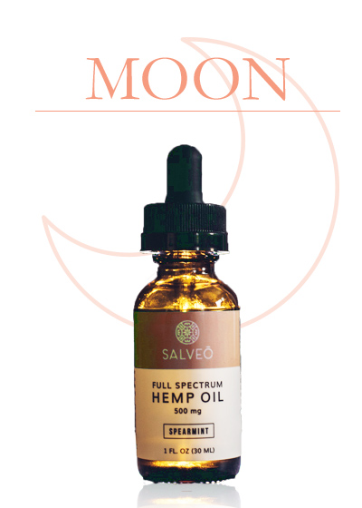
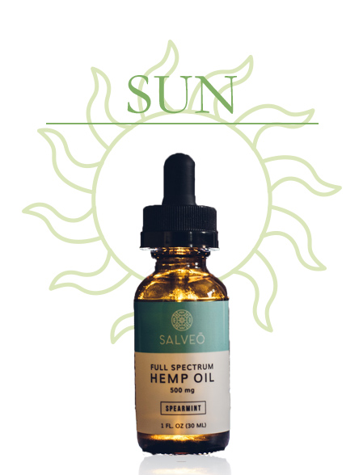
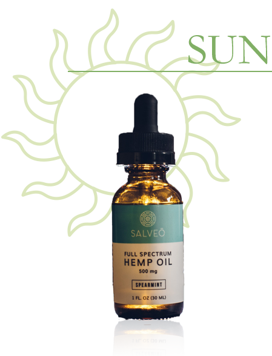

変化が多い女性のライフスタイル。
日々の中で感じるストレスや悩み、
女性特有の心身の不調に寄り添い、
自由で、自分らしい
ライフスタイルづくりを
サポートする。
AYUXIA－アユシア－は、
すべての女性にとって
そんな存在であり続けたい。
AYUXIAは、
女性たちが抱える心身の悩みを、
CBDのチカラで
内側から開放したい。
快適な毎日へ、
新しい選択肢をあなたに。
Enrich Your LIFE.
変化が多い女性のライフスタイル。
日々の中で感じるストレスや悩み、
女性特有の心身の不調に寄り添い、
自由で、自分らしい
ライフスタイルづくりを
サポートする。
AYUXIA－アユシア－は、
すべての女性にとって
そんな存在であり続けたい。
AYUXIAという名前には、
価値あるいのち を大事にケアしていきたいという想いが込められています。


私たちのミッションは
社会の中にあるバイアスや古い価値観にとらわれず、自由な選択をするサポートをすること。
ひとりひとりが抱えるからだの変化に向き合いながら、
自分のライフスタイルに合った解決方法を選択してほしい。
What is your body’s problem?
日々を過ごすなか、こんな症状で悩んだり、落ち込んだりしていませんか？
 
AYUXIAは、あなたの変化を理解し、寄り添いあえる、
そんな存在であり続けたいと思っています。
身体に取り入れるマインドフルネス
多様な症状に対して自然治癒力を高める効果が期待できるCBDオイルと、
アロマセラピーでも用いられるエッセンシャルオイルのリラックス効果を融合しました。
原料はオーガニックにこだわり、身体にやさしい製品を目指しています。
心と身体の健康バランスを保つため、
ご自宅でできる根本を見直す新しいヘルスケアとしてご使用ください。


就寝前・1日のストレスを
リセットしたいときに。
CBD Tincture 10% MOON
CBD with Rose Essential Oil
10ｍL
15,000 yen +TAX

日中のリラックス
仕事にフォーカスしたいときに。
CBD Tincture 5% SUN
CBD with Mint Essential Oil
10ｍL
10,000 yen +TAX

The features of AYUXIA
CBD－カンナビジオール－は、ヘンプ特有のポリフェノールの一種で、カンナビノイドと呼ばれる栄養成分の一つです。
身体調節機能(ECS)に働きかけることで、リラックス、睡眠の質向上、痛み・炎症・ストレスなどの緩和、免疫力アップに効果があるといわれています。
AYUXIAのCBDは、U.S.Hemp Authorityの厳しい認証を取得した米国メーカーで有機栽培ヘンプ原料からCBDを製造しているため、安全で高品質であることを保証いたします。
自然療法であるアロマセラピーにも用いられるエッセンシャルオイルをフレーバーに使用し、後味にもこだわって配合しています。
ローズには、ストレスからの解放、前向きな気持ちを取り戻す効果、女性ホルモンのバランスを整え、イライラや更年期障害などの症状緩和作用があるといわれています。
MOONではローズの後味が長く続くように配合しました。
ミントには、脳の働きを活性化させ、リフレッシュや集中力を高める効果、落ち込んだ気持ちややる気低下などの精神的な疲労にも効果があるといわれています。
SUNではミントの清涼感がほどよく続くように配合しました。
MCTオイルは、美容やダイエット効果が注目されています。
AYUXIAのCBDオイルでは、キャリアオイルとしてココナッツ由来100%の有機MCTオイルを選びました。
キャップ部分のスポイトでCBDオイルを吸い取り、舌の裏側に直接垂らします。
まずは少量から、体調の変化を見極めて、徐々に摂取量を増やしていくことを推奨しています。
自分に合った分量やタイミングを探しながら、自分流の心地よさを見つけてみてください。
毎日摂取していただくことで、だんだんと効果が現れてきます。